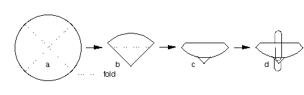

<pre>
A METHOD FOR STERILISING ARABIDOPSIS SEED

Lluis Balcells
(Department of Molecular Genetics, The Cambridge Laboratory, The 
John Innes Centre for Plant Science Research, Colney Lane, Norwich 
NR4 7UJ, England, U.K.)

*  This method is based on a previous one, developed by Renate 
Schmidt, which consists of passing the sterilising solutions through a 
filter containing the seed.  In the new method, seed are placed in a filter-
paper packet and soaked in the sterilising solutions.  Several packets, 
around 15 to 20, can be sterilised together, but use of much larger 
numbers (50) has led to contamination.

1.  METHOD
  (i) Take a sheet of Whatman filter paper No.1, 5.5 cm in diameter and 
fold it in the way you would for putting it in a funnel (Figs. a & b 
-- see below).  Place the Arabidopsis seed in the
bottom and fold the filter once more, to enclose the seed (Fig. c). 
Spread the seed inside the packet, so they form a thin layer rather
than a clump.  Use a paper-clip to prevent the packet from opening and
label the packet in pencil to identify it (Fig. d). 
  (ii) Immerse the packet in 70% ethanol (solution A) in a Magenta pot and 
remove any remaining air, pressing with a pair of forceps.  Leave the 
packet there for 2 min.  Drain the packet for a few sec by leaning it on the 
internal wall of the pot.
  (iii) Transfer the packet to a Majenta pot containing 5% sodium 
hypochlorite (bleach) + 0.5 % SDS (solution B) and shake for a few 
seconds so that the solution can reach the seed.  Leave the packet 
there for 15 min and drain it as explained above.
 *  From now on, but not before, working in sterile conditions is essential.

  (iv) Transfer the packet to a Magenta pot containing sterile distilled 
water and leave it there for aproximately 5 min, making sure the packet is 
properly washed.  Repeat this step -- several times if sterilising several or 
many packets.
  (v)  Transfer the packet to a sterile, empty petri dish and remove the clip, 
using two pairs of forceps.  Open the packet and spread the seed out on 
the filter paper as much as  possible.  Use one plate per packet and leave 
the petri dish open in the flow hood until the filter paper is completely 
dry.
  (vi) At this point you can store your sterile seed by sealing the petri dish 
with  Micropore tape.  However, if you want to sow immediately on a petri 
dish containing the appropriate medium, scratch through the surface of 
the filter paper with a spatula to sprinkle the seed.


2.  NOTES
  (i)  If you are sterilising more than aproximately 500 seed at a time, 
bigger pieces of filter paper are necessary.  Use sheets 7 or 8.5 cm in 
diameter and remember to spread the seed inside the packet.  Should 
you want to sterilise a bulk of seed, place it in several packets.  If you fail 
to take these precautions the solutions may not reach all the seeds and 
contamination can occur.
  (ii) Plastic-coated paper-clips resist solution B very well.  They come in a 
variety of colours and can be bought in Sainsbury's.  If you are sterilising 
a few packets (with different seed per packet) and each one has a 
different-coloured clip, there is no need to label the packets.
  (iii) The same solution A can be used many times.  To avoid solution B 
becoming contaminated with ethanol, you can transfer the packet(s) to a 
petri dish containing solution B prior to the treatment with solution B in a 
Magenta pot. This enables you to use the same solution B in the 
Majenta pot several times.
  (iv) If you are going to sow seeds on medium and have just sterilised the 
seed, you can place them individually on the surface of the medium, 
using forceps.  In this case do not allow the filter paper to dry out.  This 
operation takes only a few minutes and can save you a great deal of time.  
Following this system, you sow the exact number of seeds that you want 
and isolated seedlings grow faster and healthier than in clumps. For 
scoring KmR/KmS individuals, sow 70-100 seed using a template 
underneath the plate.  This greatly facilitates counting, without the need 
to open the plate.
  (v) It is easiest to make the seed packets and immerse them in solutions 
A & B at the bench, before transfering to the flow hood.

</pre>



</html>
